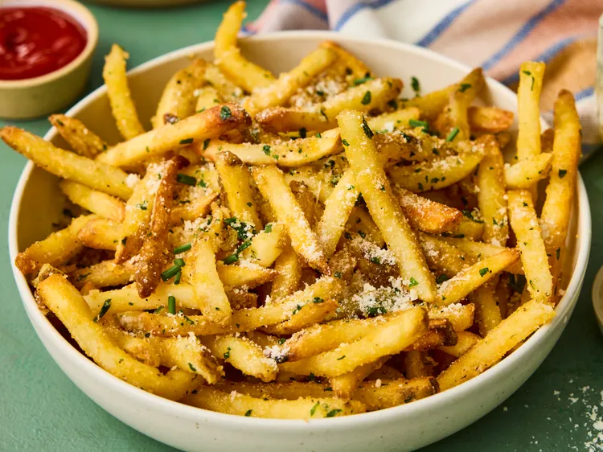

Common Recipes
Garlic Butter Parmesan Fries

These garlic butter Parmesan fries are crispy, salty fries tossed in luxurious garlic butter. Herbs add freshness and color, while fresh and powdered garlic add depth and zing. Salty Parmesan melts seamlessly over each butter-coated fry, creating an irresistible side dish or snack.
Ingredients
- 1 (28 ounce) package frozen hand-cut style fries
- 6 tablespoons unsalted butter, cubed
- 1 tablespoon minced garlic
- 1/2 teaspoon kosher salt
- 1/2 teaspoon ground black pepper
- 1/4 teaspoon garlic powder
- 2 tablespoon chopped tender mixed fresh herbs (such as parsley leaves, thyme, and chives), plus more for garnish
- 2 tablespoons grated Parmesan cheese, plus more for garnish
Steps
- Preheat the air fryer to 400 degrees F (200 degrees C) for 5 minutes.
- Place frozen fries in fryer basket. Cook, tossing every 5 minutes, until golden brown, about 20 minutes.
- Meanwhile, microwave butter, garlic, salt, pepper, and garlic powder in a medium microwave-safe bowl on High power for 15 seconds, stir, continue heating in 15-second increments, stirring after each time, until melted and fragrant, 1 1/2 to 2 minutes total. Stir in herbs and set aside.
- Transfer fries to a large bowl. Drizzle butter mixture over fries and toss to coat. Sprinkle Parmesan over fries and toss again until evenly coated. Garnish with additional Parmesan and chopped herbs. Serve.